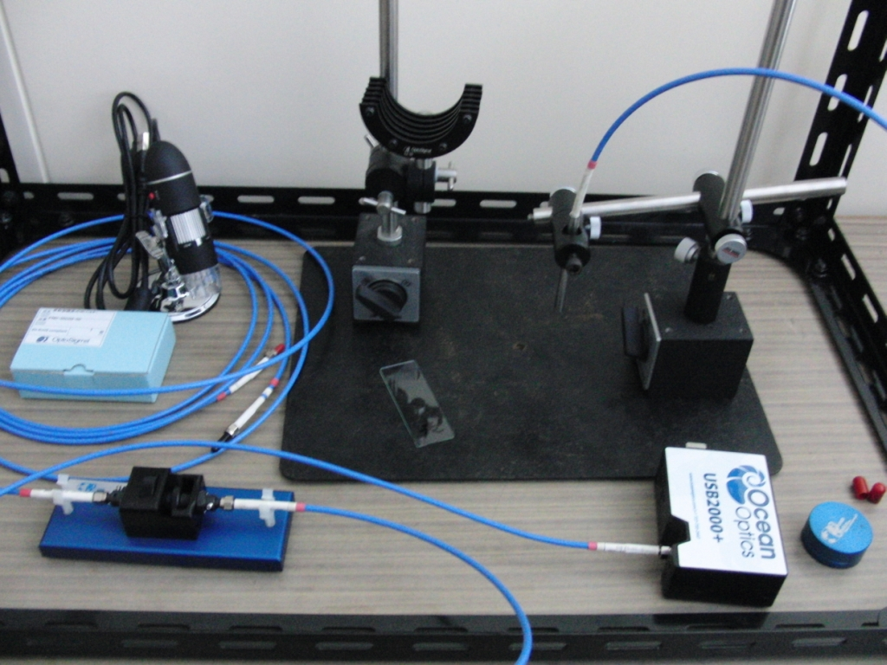

本研究室では、電子材料・磁性材料・光学材料に関する研究を行っています。
ハーブティーの茶葉や水色の光学特性と効能の関係について調べています。

ハロゲン光源などの光を薄膜材料に透過・反射させ、分光することで試料の透明度や吸収波長を測定できます。
また，蛍光体を紫外線を当てて、発せられる蛍光を分光器に取り込み、蛍光波長と蛍光強度を測定します。
このようにして溶液や固体の可視光の透過，反射，吸収，蛍光の測定を行なえます。
(C) 2014- 釧路工業高等専門学校 創造工学科 エレクトロニクスコース 機能材料研究室. All rights reserved.